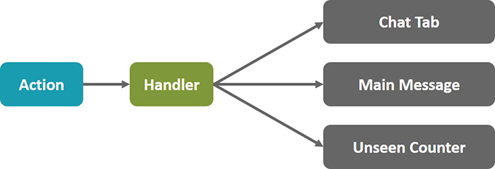

function newMessageHandler(newMessage) { var chatTab = ChatTabs.getChatTab(message.threadId); chatTab.appendMessage(message)}
Chat with counter
function newMessageHandler(newMessage) { UnseenCount.increment(); var chatTab = ChatTabs.getChatTab(message.threadId); chatTab.appendMessage(message) if (chatTab.hasFocus()) UnseenCount.decrement();}
What about this?
Chat, threads and counter
function newMessageHandler(newMessage) { UnseenCount.increment(); var chatTab = ChatTabs.getChatTab(message.threadId); chatTab.appendMessage(message) var messageView = Messages.getOpenView(); var threadId = messageView.getThreadId(); if (threadId === message.threadId) messageView.appendMessage(message) if (chatTab.hasFocus() || threadId === message.threadId) UnseenCount.decrement();}
We might doing something wrong in general?
External control

Internal control
Internal control: action flow
We are good boys, we are not mixing view with model, aren't we?
Generic system
Here is flux
Benefits
Improved data consistency
Easier to pinpoint root of a bug
Easy to test
Redux
Redux evolves the ideas of Flux, but avoids its complexity by taking cues from Elm.
Dan Abramov
Single source of truth
The state of your whole application is stored in an object tree within a single store.
First redux pricipal
import { createStore } from 'redux';const store = createStore(...);store.subscribe( () => console.log(store.getState()))